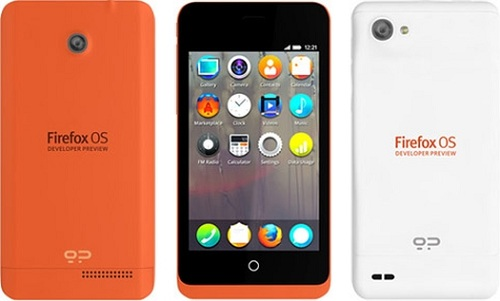

Mozilla 正式發布 Firefox OS 開發用手機

◎本文原載 Linux Pilot，原文章連結按此。
Mozilla 基金會表示在 2013 年內將會有預載 Firefox OS 的手機出現，但一直以來都只聞樓梯響，日前 Mozilla 終於宣布與 Geeksphone 和 Telefonica 合作，提供首款開發預覽用的手機，將在 2013 年 2 月出貨。

開發預覽用手機主要針對入門用戶，因此配置上比較平民化，兩個型號分別是 Keon 和 Peak，前者採用 Qualcomm Snapdragon S1 1Ghz 處理器、3G 支援 UMTS 2100/1900/900 (3G HSPA)，2G 支援 GSM 850/900/1800/1900 (2G EDGE)，屏幕為 3.5 吋 HVGA Multitouch，配備 3 百萬像素照相機、4GB ROM 和 512 MB RAM 及 MicroSD，Wifi 支援 802.11N、光學、重力感應器和 GPS。後者採用 Qualcomm Snapdragon S4 1.2Ghz x2 處理器、4.3 吋 qHD IPS Multitouch 屏幕、8 百萬 (後) 和 2 百萬像 (前) 照相機，其他配置與前者相同。
開發者可透過在 Android 平台安裝 Firefox Aurora Marketplace 進行下載安裝程式的測試，或者透過瀏覽器版本的 Firefox OS 模擬器、選擇在 Android 硬體平台直接安裝 Firefox OS 作業系統等均可用於測試，條件是手機必須已經升級至 Android 4.0 或以上版本。Keon 和 Peak 手機將在在 Geeksphone 網站發售，預計在 2013 年 2 月出貨。
您也許有興趣閱讀以下文章:
- 困頓中求轉進 - BlackBerry 與 Mozilla 持續合作 Peach Fuzzing - 2013-08-26
- Mozilla B2G 改名為 Firefox OS，將於明年初發售 - 2012-07-09
- Mozilla 推出網頁遊戲 BrowserQuest - 2012-04-06
- Mozilla 考慮讓行動版 Firefox 支援 H.264 視頻編解碼器 - 2012-03-22
- Mozilla 釋出 MPL 2.0 版 - 2012-01-16
- Mozilla 釋出以 Bing 為預設搜尋引擎的 Firefox 版本 - 2011-11-07
- Mozilla 工作小組建議為企業用戶減緩釋出時程 - 2011-10-03
- Mozilla 快速釋出週期引發批評 前志願者指臭蟲回應緩慢 - 2011-09-18
- Mozilla 宣佈以 Web 技術為基礎的行動作業系統 - 2011-07-25
- 經理人惹惱 Firefox 企業用戶 Mozilla 部落格發文平息怒火 - 2011-07-04
- Mozilla 拒絕美國政府要求移除 Firefox 附加元件 - 2011-05-11
- 【社群採訪】- 創意十足的 Mozilla Firefox 社群 - Mozilla Taiwan - 2011-03-07
- Mozilla 營收成長 34% - 2010-12-09
- Mozilla 啟用群眾外包網站診斷 Firefox 的疑難雜症 - 2010-10-22
- Mozilla 釋出新的 JavaScript 效能測試標竿 Kraken - 2010-09-22
- Mozilla 釋出 Firefox 行動版本 Fennec Alpha - 2010-09-08
- Mozilla 雲端開發環境 Bespin 改名 Skywriter - 2010-09-06
- 一窺 Mozilla Firefox 擴充套件開發 - 2009-04-07
- Firefox 延伸套件比賽落幕 Firefox 為 Mozilla 賺進百萬美元 - 2006-03-10
- Mozilla 行動裝置瀏覽器 Minimo 釋出預覽版本 - 2005-07-22
- Firefox 下載達 7500 萬 Mozilla 版圖人力同擴張 - 2005-07-19
- Mozilla 行銷網站 SpreadFirefox.com 遭入侵 - 2005-07-16
- Mozilla.org 宣佈成立基金會 持續 Mozilla 專案發展 - 2003-07-21